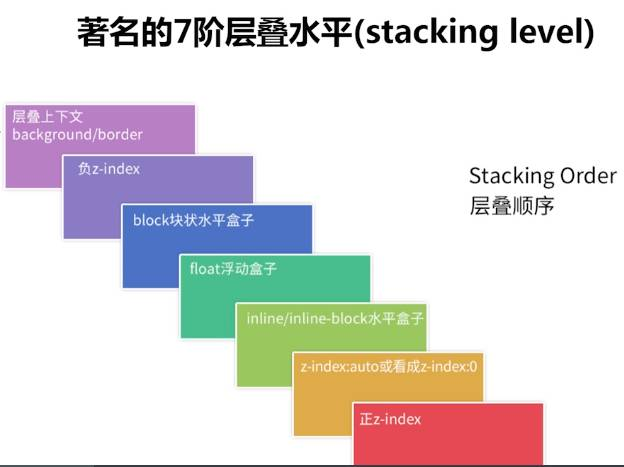

层叠上下文（显示顺序的问题）z-index
什么时候创建
- 定位元素中z-index不等于auto的会为该元素创建层叠上下文
- html根元素默认会创建层叠上下文（特例）
- 元素的opacity不等于1会创建层叠上下文
- 元素的transform不等于none会创建层叠上下文
z-index仅在定位元素（position不等于static）中有效
如果没有设置父元素没有设置层叠上下文，则该元素的会向上一直到html根元素
层叠水平仅在直接父级层叠上下文中进行比较，即层叠上下文A中的子元素的层叠水平不会和另一个层叠上
黄金准则
1. 谁大谁上：当具有明显的层叠水平标示的时候，如识别的z-indx值，在 同一个层叠上下文领域，层叠水平值大的那一个覆盖小的那一个。通俗讲就是官大的压死官小的。
2. 后来居上：当元素的层叠水平一致、层叠顺序相同的时候，在DOM流中处于后面的元素会覆盖前面的元素。
最后的建议：
- 在开发中尽量避免层叠上下文的多层嵌套，因为层叠上下文嵌套过多的话容易产生混乱，如果对层叠上下文理解不够的话是不好把控的。
- 非浮层元素（对话框等）尽量不要用z-index（通过层叠顺序或者dom顺序或者通过层叠上下文进行处理）
- z-index设置数值时尽量用个位数
example3 层叠顺序
css2.1 时代

【style】
#parent3 div{
width: 200px;
height: 200px;
border: solid thin white;
position: absolute;
}
#parent3{
background: black;
position: absolute;
z-index: 0;
width: 70%;
height: 200px;
}
#parent3-1{
width: 10/*0%;
height: 200px;
background: yellow;
position: absolute;
}
#p3-child1{
position: absolute;
background: #b750fb;
z-index: -1;
margin-left: 20px;
margin-top: 20px;
}
#p3-child2{
background: blue;
margin-left: 40px;
margin-top: 40px;
}
#p3-child3{
float: left;
background: green;
margin-top: 60px;
margin-left: 60px;
}
#p3-child4{
display: inline-block;
background: #50fbb1;
margin-top: 80px;
margin-left: 80px;
}
#p3-child5{
position: absolute;
z-index: 0;
background: #fbc450;
margin-left: 100px;
margin-top: 100px;
}
#p3-child6{
position: absolute;
z-index: 1;
background: #fb5072;
margin-left: 120px;
margin-top: 120px;
}
【html】
div#parent3>div#p3-child1+div#p3-child2+div#p3-child3+div#p3-child4+div#p3-child5+div#p3-child6
参考链接：
http://www.cnblogs.com/bfgis/p/5440956.html
http://www.zhangxinxu.com/wordpress/2016/01/understand-css-stacking-context-order-z-index/